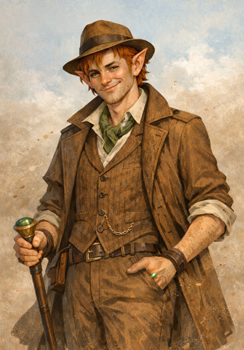

About the Inquisitor
About The Sharn Inquisitor
The Sharn Inquisitor is the name of The Hold’s premier (and only) newspaper! It’s written, printed, and published by the city’s Newspaper Guild.
The Guild (and the newspaper) are still in their growing stages, but we hope to see it expand into a cultural staple of the Hold!
Below, you can find credits for all the characters who make this work happen – and the even more important [real-life] people behind them!
You can find them all on The Hold’s Discord server.
(Note: This page doesn’t get updated very often, so it’s quite possibly incorrect! Check the Discord server for the most up-to-date information on the Guild & its members.)
Management

Truman Gottem
Half gnome, half goblin (class unknown)
Guildmaster & Editor-In-Chief
Created by Joseph (@jasonssecondalt on Discord)
Press

Sam Sabula
Half-elf Warlock
Reporter/Editor
Created by Matthew (@mattcraft900 on Discord)
[no image available]
The Fool Called V
Human Bard
Reporter
Created by (@thetimelessfool. on Discord)